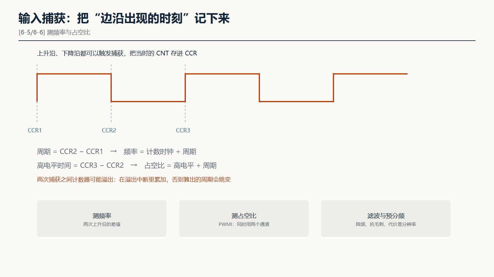

课程时长：约 75 分钟（两节） | 深度版 | 配套结构图与看图理解
6-5 讲原理：边沿到来时，硬件把当前 CNT 复制进 CCR；6-6 是实战：用两次捕获算频率，用 PWMI 模式同时算占空比。
这是“测量外部信号”的标准手段，比用 GPIO 轮询精确得多——精度取决于定时器时钟，而不是 CPU 响应速度。
说清捕获的触发与存储过程
用两次上升沿算频率
用 PWMI 算占空比
处理捕获之间的计数器溢出

图 13 输入捕获时序：边沿到来时把 CNT 存入 CCR，用两次捕获的差值算周期
信号每出现一个边沿，硬件就把当时的 CNT 存进对应的 CCR，同时置标志。CPU 只需要读差值。
图里三个捕获点：CCR1 与 CCR2 是两个上升沿，差值就是周期；CCR2 到 CCR3 是高电平时间，比值就是占空比。
通道配成输入捕获模式，选择边沿（上升/下降/双边沿），设置预分频与滤波；捕获发生时 CCR 更新、CCxIF 置位，可触发中断或 DMA。
TIM_ICInitTypeDef ic; ic.TIM_Channel = TIM_Channel_1; ic.TIM_ICPolarity = TIM_ICPolarity_Rising; ic.TIM_ICSelection = TIM_ICSelection_DirectTI; ic.TIM_ICPrescaler = TIM_ICPSC_DIV1; ic.TIM_ICFilter = 0x0; TIM_ICInit(TIM3, &ic);
第一次捕获读 CCR1 记下 t1，第二次捕获读 t2，周期 = t2 − t1（按计数单位），频率 = 计数时钟 ÷ 周期。
低频信号周期长，两次捕获之间可能溢出多次，必须在溢出中断里累加，否则算出的周期会突然变小。
volatile uint16_t t1, t2;
volatile uint8_t flag;
void TIM3_IRQHandler(void)
{
if (TIM_GetITStatus(TIM3, TIM_IT_CC1) != RESET)
{
if (!flag) { t1 = TIM_GetCapture1(TIM3); flag = 1; }
else { t2 = TIM_GetCapture1(TIM3); flag = 0; }
TIM_ClearITPendingBit(TIM3, TIM_IT_CC1);
}
}
PWMI 让两个通道分别捕获上升沿与下降沿，同一周期内得到“周期”和“高电平时间”，相除即占空比。
配置用 TIM_PWMIConfig，它会自动把另一个通道设成互补的边沿。
| 量 | 怎么算 |
|---|---|
| 周期 | CCR2 − CCR1 |
| 高电平 | CCR3 − CCR2 |
| 占空比 | 高电平 ÷ 周期 |
计数器 16 位，72MHz 下 0.9ms 就溢出一次。低频信号（如 50Hz）周期 20ms，中间会溢出二十多次。
做法：溢出中断里给一个软件计数加一，算周期时把溢出次数折算成 65536 补进去。
预分频越大，量程越大、分辨率越低
滤波越强，抗噪越好、可测最高频率越低
测高频用“测周期法”，测低频用“计频法”，两者交叉点约 1MHz/量程
为什么用捕获而不是轮询：轮询的精度取决于循环周期，捕获的精度取决于定时器时钟（微秒级）。信号再快，硬件也能在边沿瞬间记录。
为什么溢出必须补偿：捕获值只是 16 位计数器的一个快照，两次快照之间可能已经绕了好几圈。不补溢出，算出的周期会比真实值小整数倍。
例 1：计数时钟 1MHz，两次上升沿差 1000 → 周期 1ms → 频率 1kHz。
例 2：同一周期内高电平捕获差 250 → 占空比 25%。
例 3：50Hz 信号、1MHz 计数 → 周期 20000 个数，超过 65535？没有，但 20ms 内溢出 0 次；若用 72MHz 计数则溢出 20 多次。
| 错误写法 | 后果 | 正确做法 |
|---|---|---|
| 只配一个通道就想测占空比 | 拿不到下降沿 | 用 PWMI 或双通道 |
| 不处理溢出 | 低频时周期算小 | 溢出中断累加 |
| 滤波开到最大 | 高频信号被滤掉 | 按信号频率选最小滤波 |
| 捕获中断里做浮点运算 | 中断变长、丢捕获 | 只存值，主循环算 |
捕获的本质是“时间戳”：CCR 记的是事件发生的时刻，不是事件本身。所有测频、测占空比、测脉宽的算法，都是对时间戳做减法。
PWMI 的价值：一次配置同时得到周期与高电平时间，不需要切换边沿，测量的是一个周期内的真实比例，不受频率抖动影响。
信号发生器输入 1kHz、50% 方波，读出的频率与占空比是否吻合
把频率降到 10Hz，确认溢出补偿生效
改滤波档位，观察高频信号是否开始丢捕获
| 现象 | 原因 | 解决 |
|---|---|---|
| 捕获值不更新 | 通道或边沿配错 | 查 ICSelection 与极性 |
| 频率算出来是整数倍 | 溢出没补偿 | 加溢出计数 |
| 占空比恒 0 或 100 | 只捕到一个边沿 | 用 PWMI |
| 高频测不到 | 滤波/预分频太大 | 降低分频与滤波 |
Q1. 捕获时硬件做了什么？
A：把当前 CNT 复制进 CCR，并置标志。
Q2. 测频率用哪两个点？
A：两个同向边沿的捕获值。
Q3. PWMI 是什么？
A：两通道分别捕上升/下降沿，同时得到周期与占空比。
Q4. 为什么低频要补溢出？
A：两次捕获之间计数器可能绕多圈。
Q5. 预分频的作用？
A：扩大可测周期范围，牺牲分辨率。
Q6. 滤波的作用？
A：滤掉毛刺，限制最高可测频率。
Q7. 捕获精度由什么决定？
A：定时器计数时钟。
Q8. 能同时测频率和占空比吗？
A：能，用 PWMI 或双通道。
1. 1MHz 计数、捕获差 500，频率？
答：2kHz。
2. 周期 1000、高电平 300，占空比？
答：30%。
3. 16 位计数器 72MHz 多久溢出？
答：约 0.9ms。
4. 测低频为什么要累加溢出？
答：否则周期少算整数倍。
☐ 能配一路捕获
☐ 会算频率
☐ 会用 PWMI
☐ 知道溢出补偿